صادق هدایت
۱۲۸۱ – ۱۳۳۰
صادق هدایت نویسنده، مترجم و روشنفکر ایرانی بود. او را پدر داستاننویسی مدرن ایران میدانند. آثار او به دلیل عمق روانشناختی و نگاه تلخ به زندگی شهرت دارند.
📚 آثار صادق هدایت
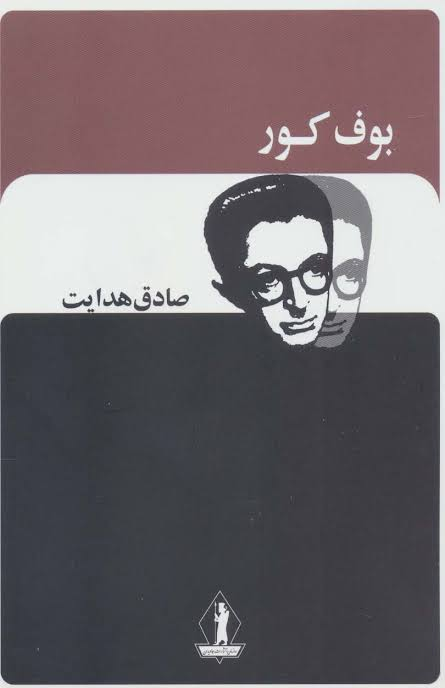
بوف کور
۱۳۱۵
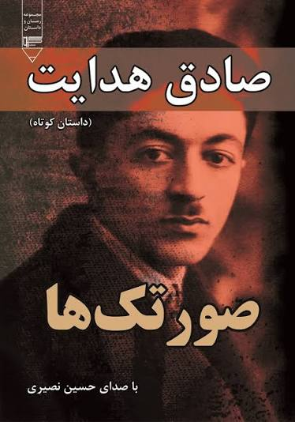
صورتک ها
۱۳۲۱
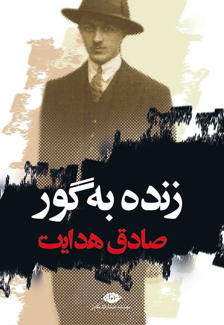
زنده به گور
۱۳۰۹
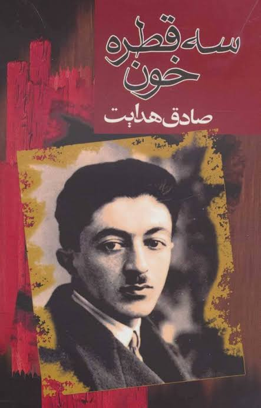
سه قطره خون
۱۳۱۱
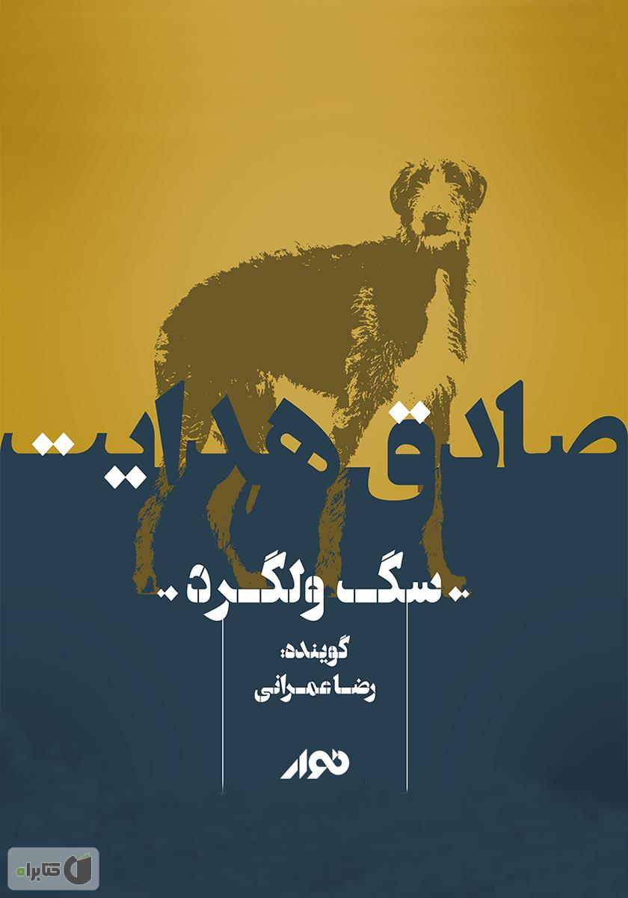
سگ ولگرد
۱۳۲۱
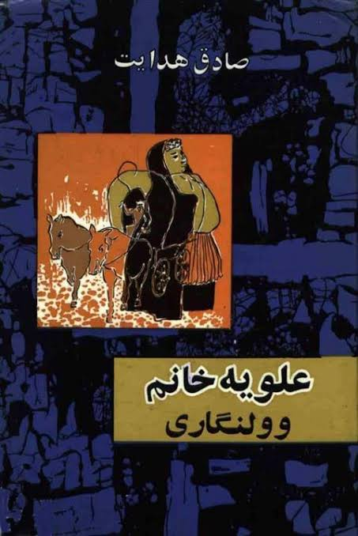
علویه خانم
۱۳۱۱
📚 کتابهای خواندنی
گزیدهای از بهترین کتابهای ادبیات فارسی
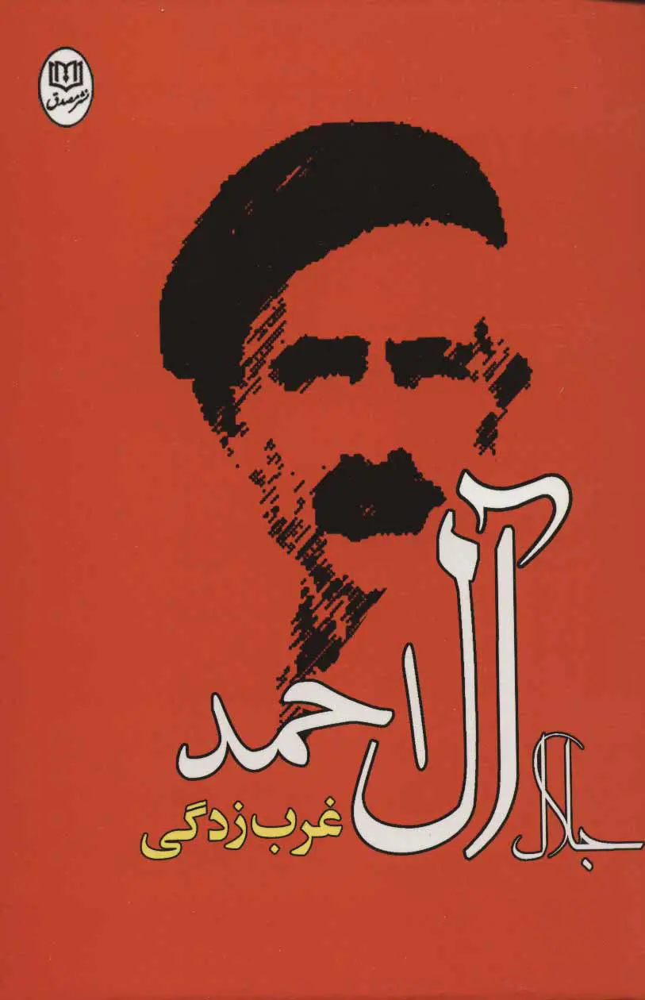
غربزدگی
جلال آل احمد - ۱۳۴۱
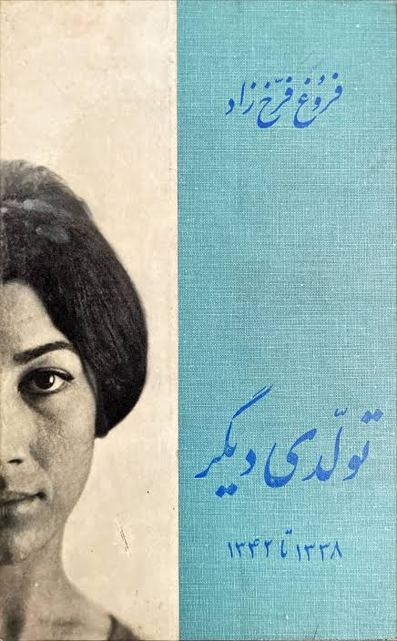
تولدی دیگر
فروغ فرخزاد - ۱۳۴۲
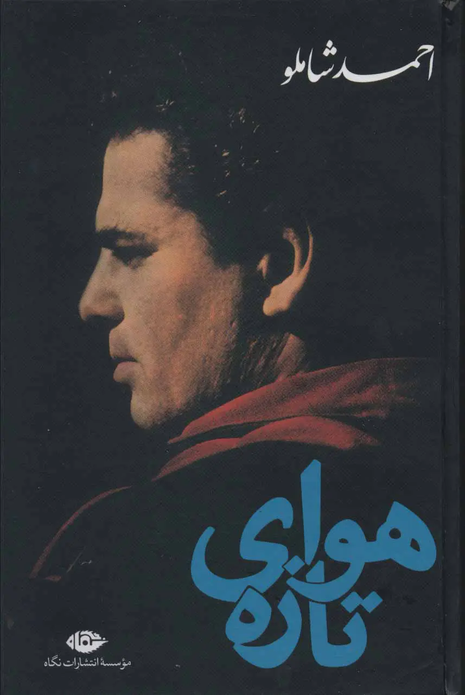
هوای تازه
احمد شاملو - ۱۳۳۶
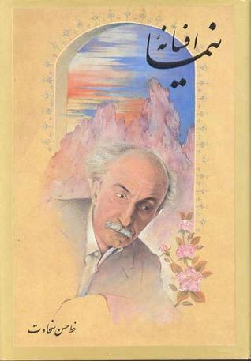
افسانه
نیما یوشیج - ۱۳۰۱
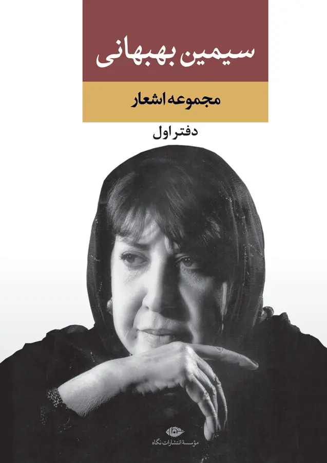
ستاره
سیمین بهبهانی - ۱۳۴۱
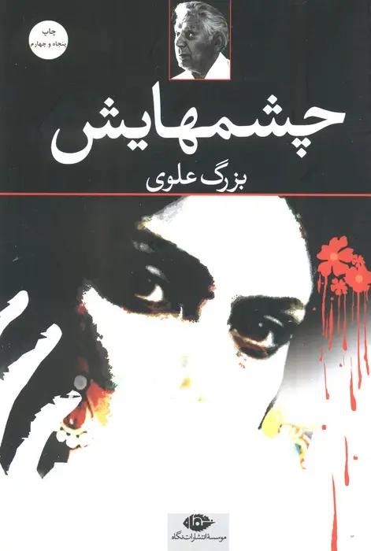
چشمهایش
بزرگ علوی - ۱۳۳۱